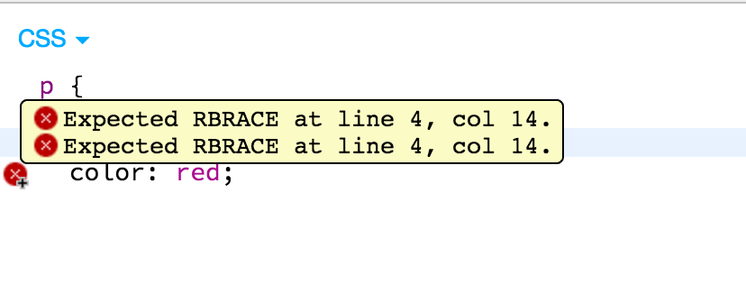
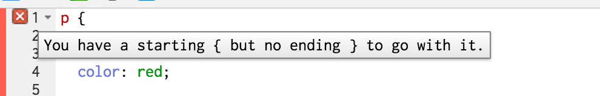
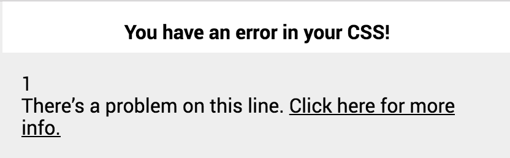

Popcode
A Code Editor for Learners
Do Now
If your last name starts with A–M, open https://jsbin.com |
If your last name starts with N–Z, open https://popcode.org |
| Type the following code in the editor—then fix the bugs! | |
HTML (in the
|
CSS |
Popcode is a code editor built for learners.
Agenda
- Do Now/Intro
- What is Popcode?
- Why we built Popcode
- How Popcode is being used
- What’s next for Popcode
- Lesson and activity
- Discussion
- Q&A
Who I am

- My name is Mat
- I manage an engineering team at Genius
- I am a third-year volunteer for ScriptEd
- I created Popcode
What is Popcode?
Popcode tells you what’s wrong in plain English.
JS Bin |
Popcode |
Popcode is designed for classrooms
- Works well on unreliable networks
- One click to export work to GitHub gist
- Teachers create starter code URL that can be opened with one click
Why we made Popcode
The web is a great place to learn to code.
It’s also a terrible one.
Children learn best when they can explore on their own.
Educators are most effective when teaching concepts, not rote mechanics.
How Popcode is being used today

- 36 classrooms
- Over 1,000 students
- Daily part of the curriculum
What’s Next for Popcode
More and better mistake support
Code labeling

Tiered learning support

Support more classroom workflows
- Assignment and submission
- Automated checks for correctness
- Group work
Activity
http://bit.ly/csnycpopcode1
http://bit.ly/csnycpopcode2
Discussion
How can tools like Popcode better support students learning how to code?
Q&A
Thanks!
https://popcode.org
https://github.com/popcodeorg/popcode
@popcodeorg
mat.a.brown@gmail.com